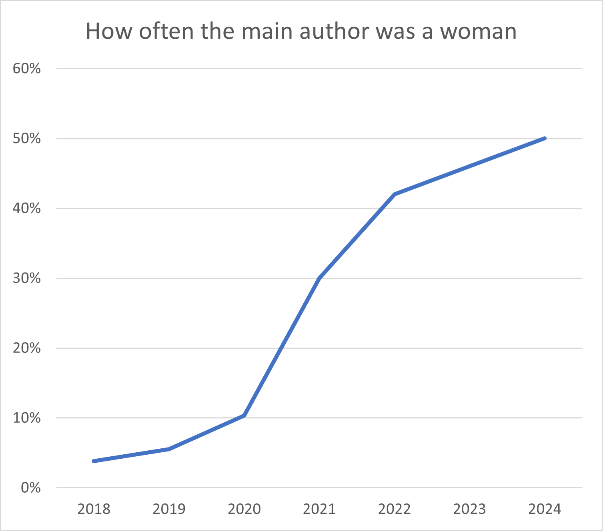
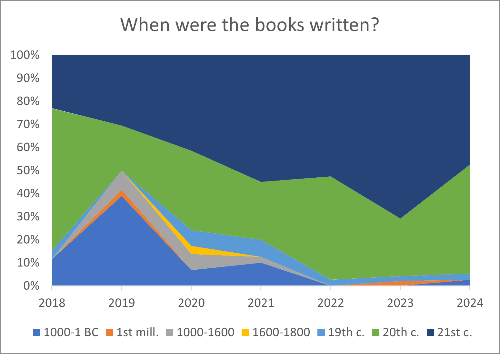
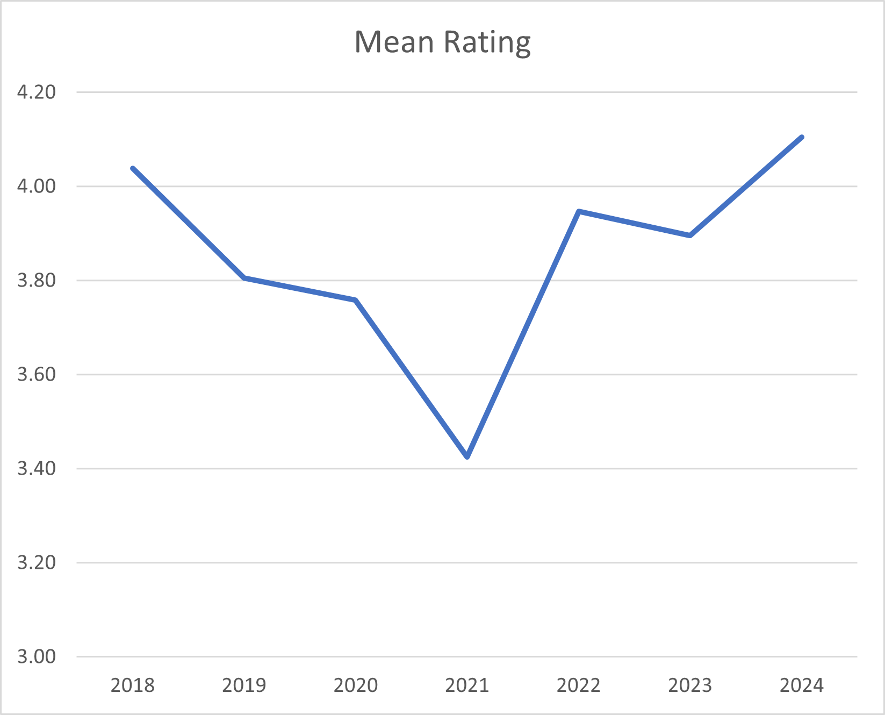
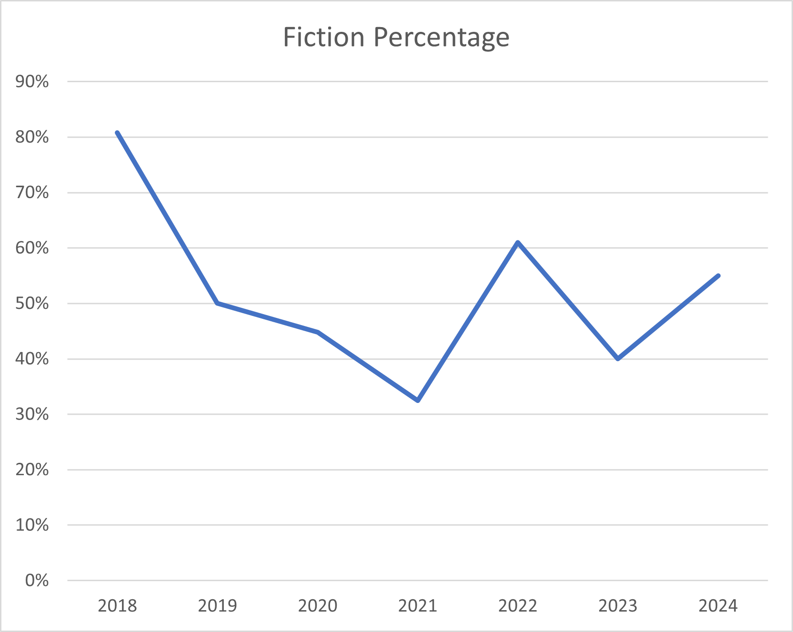
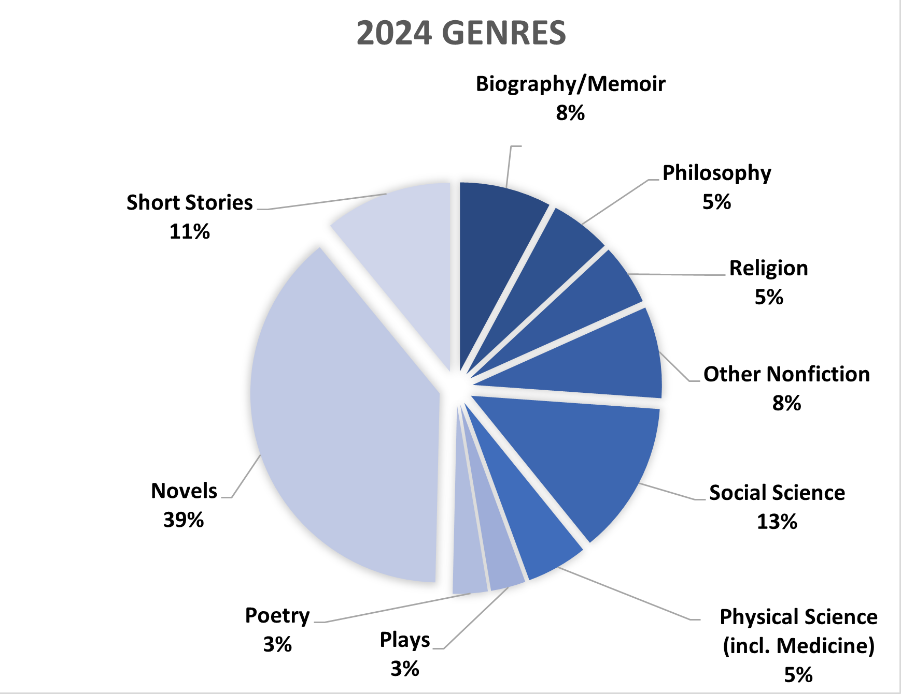

Being an analysis of the books I read in 2024 considered beside all the books I've read in the previous six years
Since 2018 I've recorded all the books I've read. (I really wish I had started sooner, btw. If you are a reader and you don't keep track of what books you read, I recommend starting.) This page updates my analysis of this history with 2024's reading.
If you want to see the analyses I posted after previous years, they're still up. Here are 2021, 2022, and 2023.
Last Year's Goals
First let's look back at the goals I set for my 2024 reading at the beginning of the year.
1: Read 40 books.
Close, but no cigar. In 2023 I read 48 books and figured a goal of 40 would be reasonable for 2024 even though it would be my first full year of medical school. In truth, the goal was reasonable but my priorities were evidently not straight.
I only read 38 books. If I had spent less time playing Zelda games or engaging in other screen-related activities I could have fit in far more than two additional books.
| 2018 | 2019 | 2020 | 2021 | 2022 | 2023 | 2024 | Total |
|---|---|---|---|---|---|---|---|
| 26 | 36 | 29 | 40 | 38 | 48 | 38 | 255 |
2: Ensure at least 45% of books read were by women. A success. Half of my 2024 books were by women. Squinting at this graph, you can see a sigmoid curve flattening out around 50%. That was the plan when I started being more thoughtful about my reading around 2021.
3: Read a decent number of old books from diverse times. Miserable failure. Only from the 20th and 21st centuries did I read at least 2 books. As you can see, recent books are more dominant in my reading than ever before. This goal is in conflict with goal 2, but I did have a list of old books I wanted to read, which I just failed to reference much. I'm disappointed with myself here, as I want to be the sort of person who reads lots of classic books.
Goal 4: I only read 3/10 and the goal was 5/10. So a failure, but better than last year. The ones in bold have been read. I won't set a goal like this for 2024, as it has never worked well in the past.
1. Cry, the Beloved Country by Alan Paton
2. Tehanu by Ursula K. Le Guin
3. Feminist Theory: From Margin to Center by bell hooks
4. Idylls of the King by Tennyson
5. The Civil War as a Theological Crisis by Mark Noll
6. The Country of the Pointed Firs by Sarah Orne Jewett
7. Revelations of Divine Love by Julian of Norwich
8. Analects by Confucius
9. Middlemarch by George Eliot
10. Devotions upon Emergent Occasions by John Donne
Top Books of the Past Year
Here are my favs.
Other Findings
I'm not sure what to make of this data.
Another statistic that has been creeping down as my 21st century book % has risen is the fiction %. I was intentionally trying to increase this in 2022, and it worked. When I stopped focusing on it in 2023, I shifted back to nonfiction once again. I'm not sure I care enough about this to work on it. In childhood I mostly read fiction and it is perhaps not suprising that this has changed as I age.
 The big story here is, of course, the resurgance of nonfiction books spread across most genres. I read not a single play this year--a first. About 2/3 of those novels were fantasy, by the way.
Also, the best book I read this year was Perelandraby C. S. Lewis. It's a fascinating world of philosophical fantasy that plays with the Fall, free will, and temptation.
Here are my top authors from each year since 2018 with the number and type of books or plays I read from them that year
| Year | Author | Number | Type of Books |
|---|---|---|---|
| 2018 | Terry Prachett | 11 | Satirical fantasy novels |
| 2019 | Aristophanes | 10 | Comedic plays |
| 2020 | Hesiod; Jonathan Haidt | 2 each | Poetry; social psychology |
| 2021 | L. B. Graham | 5 | Fantasy novels |
| 2022 | Brandon Sanderson | 6 | Fantasy novels |
| 2023 | Brandon Sanderson | 6 | Fantasy novels |
| 2024 | Ursula K. Le. Guin | 4 | Fantasy & sci-fi novels or short stories |
2025 Goals
Medical school hasn't stopped me from reading so far. I'll keep my numerical goal at 40 books in 2024 so as not to overextend myself. Additionally, I want to broaden my reading. To that end, I'll make a new geographic goal while maintaining my old goals of 1) >45% of my reading being authored by women and 2) reading two books from each time period.
Here's a map of the world, colored according to very rough culture regions. You may take issue with this map, and I probably would too if I hadn't made it. But my goal to read at least two books from each region. I've labeled the map with the three books from outside the core Anglophone region which I read in 2023. That's not a lot! This goal will increase that to a minimum of 10 if I succeed.

This isn't about setting; it's about the author. For instance, Americanah is set mostly in the USA, but the author is Nigerian. On the other hand, I didn't count The Sun Also Rises, which I also read this year, as European because Hemingway was an American. Edge cases will be decided according to the vibes.